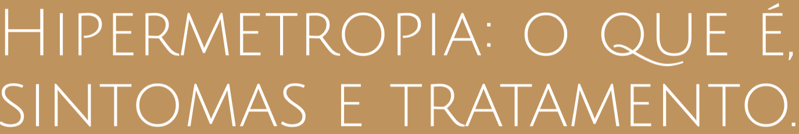

O QUE É HIPERMETROPIA?
Hipermetropia, conhecida como o oposto da miopia, ou seja, a dificuldade de enxergar de perto.Vemos a imagem
borrada, portanto há uma dificuldade de olhar e ver objetos próximos porém de longe é perfeitamente visível, como
é perfeitamente visível, como ler uma placa de trânsito por exemplo.
Quando você tem hipermetropia, o globo ocular é um pouco mais achatado ou a córnea mais plana. Assim, a ima-
gem acaba se formando depois da retina, ou seja, a imagem que a retina capta não está correta. Portanto, a causa da
hipermetropia é essa alteração do formato do globo ocular.

QUAIS SÃO OS SINTOMAS?
Nos níveis mais avançados os sintomas são:
• Dor de Cabeça;
• Dor nos olhos;
• Ardor;
• Náuseas;
TEM CURA?
A hipermetropia é uma condição anatômica e a cirurgia refrativa nem sempre vai livrar a pessoa de usar óculos ou
lente de contato.Mas é possível conviver bem com a hipermetropia e até estabilizar o quadro com o tratamento ade-
quado. O comum é que o grau se estabilize com 22 a 23 anos, quando a anatomia do corpo deixa de mudar.